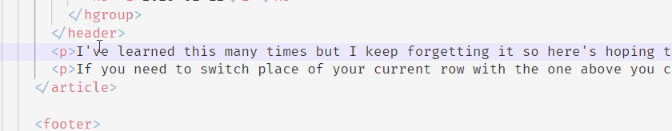

Move line in VSCode
2023-01-12
I've learned this many times but I keep forgetting it so here's hoping that putting it in writing will help me cement the knowledge 😅
If you need to switch place of your current row with the one below you can use the alt+arrow down shortcut instead of cut/paste. This also works for moving in the other directions plus with multiple lines.
